# !pip install -Uq diffusers transformers fastcoreOne of the great things with Diffusion Models (DMs) is that we can tune a bit their results without retraining them. Indeed, their inference process is somewhat an optimization process, and therefore can be tuned at several levels.
In this notebook, I try to analyze a bit the sampling process of Stable Diffusion, and derive from this analysis potential small variations (improvements?) of the images generated.
Notes: 1. I do not go into details of how diffusion models work here, here are some amazing references for those of you who want to learn more about them: - A great blog post from Yang Song (and the video from the same author) - fastai part2 2022 lesson 9 - The paper “Elucidating the design space of diffusion models” from Karras et. al., which gives an amazing unifying framework to reason about the different diffusion models
Part of the text and code below are taken from this fastai notebook. Thanks to them for the amazing work done!
I did not put a high emphasis on code quality here, because I wanted to mostly focus on the ideas and intuitions to understand Stable Diffusion.
Imports And Utils
To run Stable Diffusion on your computer you have to accept the model license. It’s an open CreativeML OpenRail-M license that claims no rights on the outputs you generate and prohibits you from deliberately producing illegal or harmful content. The model card provides more details. If you do accept the license, you need to be a registered user in 🤗 Hugging Face Hub and use an access token for the code to work. You have two options to provide your access token:
- Use the
huggingface-cli logincommand-line tool in your terminal and paste your token when prompted. It will be saved in a file in your computer. - Or use
notebook_login()in a notebook, which does the same thing.
import torch
torch.cuda.set_device(1) /home/seb.derhy/anaconda3/envs/sdv2/lib/python3.9/site-packages/tqdm/auto.py:22: TqdmWarning: IProgress not found. Please update jupyter and ipywidgets. See https://ipywidgets.readthedocs.io/en/stable/user_install.html
from .autonotebook import tqdm as notebook_tqdmfrom PIL import Image
from fastcore.all import concat
import torch, logging
from pathlib import Path
from huggingface_hub import notebook_login
from diffusers import StableDiffusionPipeline
from PIL import Image
import matplotlib.pyplot as plt
logging.disable(logging.WARNING)
if not (Path.home()/'.huggingface'/'token').exists(): notebook_login()from tqdm.auto import tqdmVery useful util function to display a grid of images
def image_grid(imgs, rows, cols):
w,h = imgs[0].size
grid = Image.new('RGB', size=(cols*w, rows*h))
for i, img in enumerate(imgs): grid.paste(img, box=(i%cols*w, i//cols*h))
return gridUsing Stable Diffusion
seed = 123## From: https://mpost.io/best-100-stable-diffusion-prompts-the-most-beautiful-ai-text-to-image-prompts/
prompts = [
'portrait photo of an astronaut riding a horse',
'portrait photo of a handsome businesssman',
'portrait photo of an asia old warrior chief, tribal panther make up, blue on red, side profile, looking away, serious eyes, 50mm portrait photography, hard rim lighting photography',
'portrait photo headshot by mucha, sharp focus, elegant, render, octane, detailed, award winning photography, masterpiece, rim lit'
]guidance_scale = 7.5
num_inference_steps = 50
device = torch.device("cuda")
num_images_per_prompt = 1from diffusers import StableDiffusionPipeline, EulerDiscreteScheduler
import torch
model_id = "stabilityai/stable-diffusion-2-base"
# Use the Euler scheduler here instead
scheduler = EulerDiscreteScheduler.from_pretrained(model_id, subfolder="scheduler")
pipe = StableDiffusionPipeline.from_pretrained(model_id, scheduler=scheduler, revision="fp16", torch_dtype=torch.float16)
pipe = pipe.to("cuda")Fetching 12 files: 100%|██████████| 12/12 [00:00<00:00, 4237.38it/s]Let’s start by running the pipeline “off-the-shelf”, without any modification
torch.manual_seed(seed)
images = pipe(prompts,
guidance_scale=guidance_scale,
num_inference_steps=num_inference_steps,
num_images_per_prompt=num_images_per_prompt).images100%|██████████| 50/50 [00:55<00:00, 1.11s/it]len(images)4ref_images = images.copy()image_grid(ref_images, rows=num_images_per_prompt, cols=len(prompts))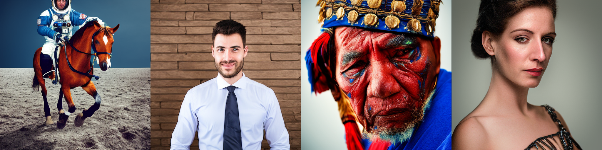
Reproduce inference loop
In order to customize the inference loop, the first step is to reimplement it, and add some “backdoors”. More specifically, we will add 2 backdoors: - One that allows for a different update at each iteration - One that allows for post-processing after the sampling loop has been run
These 2 customization points may look a bit random at this point, but we will see later how they can be useful
def regular_update(latents, i, t, text_embeddings, do_classifier_free_guidance):
# expand the latents if we are doing classifier free guidance
latent_model_input = torch.cat([latents] * 2) if do_classifier_free_guidance else latents
latent_model_input = pipe.scheduler.scale_model_input(latent_model_input, t)
# predict the noise residual
noise_pred = pipe.unet(latent_model_input, t, encoder_hidden_states=text_embeddings).sample
# perform guidance
if do_classifier_free_guidance:
noise_pred_uncond, noise_pred_text = noise_pred.chunk(2)
noise_pred = noise_pred_uncond + guidance_scale * (noise_pred_text - noise_pred_uncond)
# compute the previous noisy sample x_t -> x_t-1
latents = pipe.scheduler.step(noise_pred, t, latents).prev_sample
return latents@torch.no_grad()
def my_sd_sampling(prompt=prompts, device=device,
guidance_scale=guidance_scale,
num_inference_steps=num_inference_steps,
num_images_per_prompt=num_images_per_prompt,
custom_update=None, post_processing=None, **kwargs):
# 0. Default height and width to unet
height = pipe.unet.config.sample_size * pipe.vae_scale_factor
width = pipe.unet.config.sample_size * pipe.vae_scale_factor
# 1. Check inputs. Raise error if not correct
pipe.check_inputs(prompt, height, width, callback_steps=1)
# 2. Define call parameters
batch_size = 1 if isinstance(prompt, str) else len(prompt)
# here `guidance_scale` is defined analog to the guidance weight `w` of equation (2)
# of the Imagen paper: https://arxiv.org/pdf/2205.11487.pdf . `guidance_scale = 1`
# corresponds to doing no classifier free guidance.
do_classifier_free_guidance = guidance_scale > 1.0
# 3. Encode input prompt
text_embeddings = pipe._encode_prompt(prompt, device, num_images_per_prompt,
do_classifier_free_guidance, negative_prompt=None)
# 4. Prepare timesteps
pipe.scheduler.set_timesteps(num_inference_steps, device=device)
timesteps = pipe.scheduler.timesteps
# 5. Prepare latent variables
num_channels_latents = pipe.unet.in_channels
latents = pipe.prepare_latents(
batch_size * num_images_per_prompt,
num_channels_latents,
height,
width,
text_embeddings.dtype,
device,
generator=None,
latents=None,
)
num_warmup_steps = len(timesteps) - num_inference_steps * pipe.scheduler.order
# 7. Denoising loop
for i, t in enumerate(pipe.progress_bar(timesteps)):
if custom_update:
latents = custom_update(latents, i, t, text_embeddings, do_classifier_free_guidance)
else:
latents = regular_update(latents, i, t, text_embeddings, do_classifier_free_guidance)
if post_processing: ## We are adding here the option of post-processing the final latent outputs
latents = post_processing(**kwargs)
# 8. Post-processing
image = pipe.decode_latents(latents)
# 9. Run safety checker
image, has_nsfw_concept = pipe.run_safety_checker(image, device, text_embeddings.dtype)
# 10. Convert to PIL
images = pipe.numpy_to_pil(image)
return imagestorch.manual_seed(seed)
imgs = my_sd_sampling()100%|██████████| 50/50 [00:55<00:00, 1.11s/it]Let’s check that our pipeline gives the same results as the original one
import numpy as np
assert np.sum(np.array(imgs[0])-np.array(ref_images[0]))==0# image_grid(ref_images + imgs, rows=2*num_images_per_prompt, cols=len(prompts))Log and analyze noise predictions
Below, we are going to log the 3 noise predictions that are performed at each timestep: - noise_pred_uncond (with just the noisy image as input) - noise_pred_text (with the noisy image + text encoding as input) - noise_pred (weighted average between them using the guidance_scale parameter)
Log the noise predictions
def update_with_debug_logs(latents, i, t, text_embeddings, do_classifier_free_guidance):
# expand the latents if we are doing classifier free guidance
latent_model_input = torch.cat([latents] * 2) if do_classifier_free_guidance else latents
latent_model_input = pipe.scheduler.scale_model_input(latent_model_input, t)
# predict the noise residual
noise_pred = pipe.unet(latent_model_input, t, encoder_hidden_states=text_embeddings).sample
# perform guidance
if do_classifier_free_guidance:
noise_pred_uncond, noise_pred_text = noise_pred.chunk(2)
noise_unconds.append(noise_pred_uncond.detach().cpu()) ## Log the noise unconds results
noise_conds.append(noise_pred_text.detach().cpu()) ## Log the noise conds results
noise_pred = noise_pred_uncond + guidance_scale * (noise_pred_text - noise_pred_uncond)
noise_preds.append(noise_pred.detach().cpu())
# compute the previous noisy sample x_t -> x_t-1
new_latents = pipe.scheduler.step(noise_pred, t, latents).prev_sample
latent_step = new_latents-latents
return new_latentsnoise_preds, noise_unconds, noise_conds = [], [], []
torch.manual_seed(seed)
imgs = my_sd_sampling(custom_update=update_with_debug_logs)100%|██████████| 50/50 [00:55<00:00, 1.12s/it]import numpy as np
assert np.sum(np.array(imgs[0])-np.array(ref_images[0]))==0# image_grid(ref_images[:len(prompts)] + imgs[:len(prompts)]
# + ref_images[len(prompts):] + imgs[len(prompts):], rows=2*num_images_per_prompt, cols=len(prompts))Compare the noise norms
One thing we observe from the code above (noise_pred_uncond, noise_pred_text = noise_pred.chunk(2)) is that we actually pass the input image twice to the network at each iteration:
- Once without the conditional text input -> Predict the noise from the noisy image only
- Once with the conditional text input -> Predict the noise from the noisy image AND the image description’s encoding
Since these inputs are a bit different, we expect these 2 passes to predict different noise values (i.e. point towards different real images). However, since both networks are trained to predict noise from a noisy image, we should expect the noise prediction to have approximately the same norm in both cases.
Let’s see if this is true, and let’s also compare this norm with the final noise prediction norm.
noise_preds_norm = [pred.norm() for pred in noise_preds]
noise_unconds_norm = [pred.norm() for pred in noise_unconds]
noise_conds_norm = [pred.norm() for pred in noise_conds]plt.scatter(range(num_inference_steps), noise_unconds_norm, c='b', alpha=0.5, label="Unconditional noise pred norm")
plt.scatter(range(num_inference_steps), noise_conds_norm, c='g', alpha=0.5, label="Conditional noise pred norm")
plt.scatter(range(num_inference_steps), noise_preds_norm, c='r', alpha=0.5, label="Final noise pred norm")
plt.legend()<matplotlib.legend.Legend at 0x7f5ab3fd3670>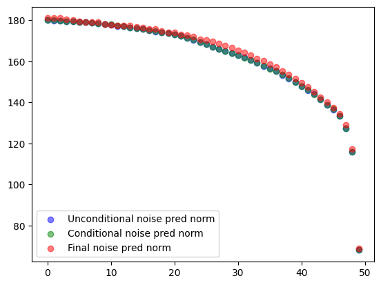
Here we indeed see that the unconditional and conditional noise norms are approximately the same. However, the final noise prediction seems to have a slightly different norm? Why is that?
The answer to this question is in the next line of code:
noise_pred = noise_pred_uncond + guidance_scale * (noise_pred_text - noise_pred_uncond)
This line does a weighted average between the conditioned and unconditioned noise prediction, and has therefore ABSOLUTELY NO REASON to have the same norm.
Does this make sense? Well… In my opinion, not so much, so let’s try to re-normalize things :).
Improve the pipeline with “whole” rescale
NOTE: the idea implemented below was first suggested by Jeremy Howard in this Twitter thread
def update_with_rescale(latents, i, t, text_embeddings, do_classifier_free_guidance):
# expand the latents if we are doing classifier free guidance
latent_model_input = torch.cat([latents] * 2) if do_classifier_free_guidance else latents
latent_model_input = pipe.scheduler.scale_model_input(latent_model_input, t)
# predict the noise residual
noise_pred = pipe.unet(latent_model_input, t, encoder_hidden_states=text_embeddings).sample
# perform guidance
if do_classifier_free_guidance:
noise_pred_uncond, noise_pred_text = noise_pred.chunk(2)
noise_pred = noise_pred_uncond + guidance_scale * (noise_pred_text - noise_pred_uncond)
noise_pred = noise_pred/noise_pred.norm()*noise_pred_uncond.norm() ### THIS IS THE KEY CHANGE
# compute the previous noisy sample x_t -> x_t-1
latents = pipe.scheduler.step(noise_pred, t, latents).prev_sample
return latentstorch.manual_seed(seed)
imgs = my_sd_sampling(custom_update=update_with_rescale)100%|██████████| 50/50 [00:55<00:00, 1.12s/it]image_grid(ref_images[:len(prompts)] + imgs[:len(prompts)]
+ ref_images[len(prompts):] + imgs[len(prompts):], rows=2*num_images_per_prompt, cols=len(prompts))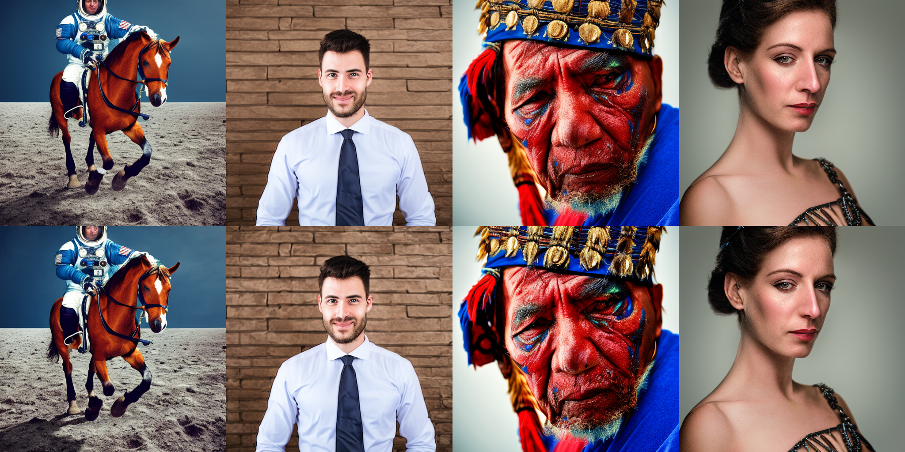
ref_images[0]imgs[0]ref_images[2]imgs[2]Definitely improves the image quality in my opinion!
Log and analyze latent space trajectory
Log trajectory
Below, we are going to log the trajectory point at each timestep, so that we can analyze a bit what’s happening
def update_with_debug_logs(latents, i, t, text_embeddings, do_classifier_free_guidance):
# expand the latents if we are doing classifier free guidance
latent_model_input = torch.cat([latents] * 2) if do_classifier_free_guidance else latents
latent_model_input = pipe.scheduler.scale_model_input(latent_model_input, t)
# predict the noise residual
noise_pred = pipe.unet(latent_model_input, t, encoder_hidden_states=text_embeddings).sample
# perform guidance
if do_classifier_free_guidance:
noise_pred_uncond, noise_pred_text = noise_pred.chunk(2)
noise_pred = noise_pred_uncond + guidance_scale * (noise_pred_text - noise_pred_uncond)
# compute the previous noisy sample x_t -> x_t-1
new_latents = pipe.scheduler.step(noise_pred, t, latents).prev_sample
latent_step = new_latents-latents
# THIS IS THE IMPORTANT LINES --> Log information
traj_pts_times.append(t.detach().cpu())
traj_pts_values.append(new_latents.detach().cpu())
return new_latentstraj_pts_times, traj_pts_values = [], []
torch.manual_seed(seed)
imgs = my_sd_sampling(custom_update=update_with_debug_logs)100%|██████████| 50/50 [00:55<00:00, 1.12s/it]I find the fact that time is moving backward a bit unintuitive, especially for the kind of things we’ll do next, so let’s reverse it.
traj_pts_times[:10][tensor(999., dtype=torch.float64),
tensor(978.6122, dtype=torch.float64),
tensor(958.2245, dtype=torch.float64),
tensor(937.8367, dtype=torch.float64),
tensor(917.4490, dtype=torch.float64),
tensor(897.0612, dtype=torch.float64),
tensor(876.6735, dtype=torch.float64),
tensor(856.2857, dtype=torch.float64),
tensor(835.8980, dtype=torch.float64),
tensor(815.5102, dtype=torch.float64)]traj_pts_times = [999-t for t in traj_pts_times]Visualize the trajectory using dimension reduction
Here we will perform 3 different types of dimension reduction in order to visualize the trajectory - T-SNE - PCA - MDS
In these plot, yellow represent the enf of the sampling process, while the purple represents the beginning of the sampling process.
from sklearn.manifold import TSNE
X = torch.stack(traj_pts_values).view(len(traj_pts_values), -1)
X.shapetorch.Size([50, 65536])X_lowdim = TSNE(n_components=2, learning_rate='auto', init='random', perplexity=3).fit_transform(X)
X_lowdim.shape(50, 2)plt.scatter(X_lowdim[:, 0], X_lowdim[:, 1], c=traj_pts_times)<matplotlib.collections.PathCollection at 0x7f5ab3eca730>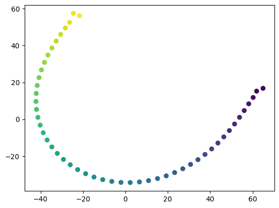
from sklearn.decomposition import PCA
pca = PCA(n_components=2)
X_lowdim = pca.fit_transform(X)
X_lowdim.shape(50, 2)plt.scatter(X_lowdim[:, 0], X_lowdim[:, 1], c=traj_pts_times)<matplotlib.collections.PathCollection at 0x7f5aaaaf7fa0>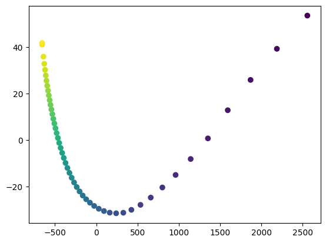
I personally really like the MDS representation, because it tries to project the data in a way that best preserves distances.
from sklearn.manifold import MDS
mds = MDS()
X_lowdim = mds.fit_transform(X)
X_lowdim.shape(50, 2)plt.scatter(X_lowdim[:, 0], X_lowdim[:, 1], c=traj_pts_times)<matplotlib.collections.PathCollection at 0x7f5aaaa729d0>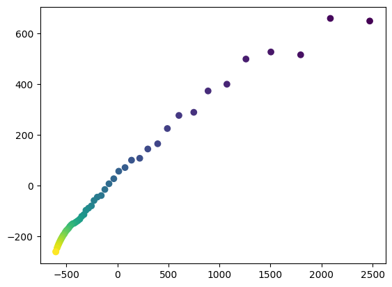
We can see that the trajectory is quite smooth!! This is something we’ll try to leverage later on. But first let’s do some more analysis:
Analyze the steps length and directions
One interesting way to analyze the trajectory is to look at each step performed in the sampling loop: - How big was the step? - How much is it changing direction in the course of sampling?
steps = [(traj_pts_values[i+1]-traj_pts_values[i]) for i in range(len(traj_pts_values)-1)]
steps_norms = [step.norm() for step in steps]
steps_unit_vecs = [step/step.norm() for step in steps]
steps_dir_change = [(steps_unit_vecs[i+1]-steps_unit_vecs[i]).norm() for i in range(len(steps_unit_vecs)-1)]fig, axs = plt.subplots(2, 1, figsize=(18, 12))
axs[0].scatter(traj_pts_times[2:], steps_dir_change)
axs[0].set_title("Direction Changes Strength")
axs[1].scatter(traj_pts_times[1:], steps_norms)
axs[1].set_title("Step Length")Text(0.5, 1.0, 'Step Length')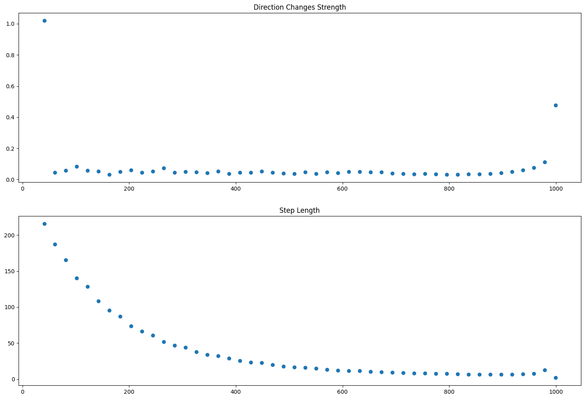
Interestingly, we see that the direction is changing a lot at the end. This tends to make me think that the algorithm overshoots somehow at the end. Let’s try to fix this!
Prevent overshooting at the end
One very simple way to prevent this convergence overshooting at the end is to only do “part of the way”. That is, if the noise prediction says you should do a step size of x, you actually do a step of alpha*x, where alpha<1. Let’s try to implement something like this
def update_without_overshoot(latents, i, t, text_embeddings, do_classifier_free_guidance):
# expand the latents if we are doing classifier free guidance
latent_model_input = torch.cat([latents] * 2) if do_classifier_free_guidance else latents
latent_model_input = pipe.scheduler.scale_model_input(latent_model_input, t)
# predict the noise residual
noise_pred = pipe.unet(latent_model_input, t, encoder_hidden_states=text_embeddings).sample
# perform guidance
if do_classifier_free_guidance:
noise_pred_uncond, noise_pred_text = noise_pred.chunk(2)
noise_pred = noise_pred_uncond + guidance_scale * (noise_pred_text - noise_pred_uncond)
# compute the previous noisy sample x_t -> x_t-1
new_latents = pipe.scheduler.step(noise_pred, t, latents).prev_sample
## THIS IS THE IMPORTANT CHANGE
if i>=round(0.8*num_inference_steps) and i!=num_inference_steps-1: ## When we get towards the end of the sampling
new_latents = latents + 0.85 * (new_latents-latents) #do only 85% of the step supposed to be done.
return new_latentssteps_unit_vecs = []
steps_magnitudes = []torch.manual_seed(seed)
imgs = my_sd_sampling(custom_update=update_without_overshoot)100%|██████████| 50/50 [00:55<00:00, 1.12s/it]image_grid(ref_images[:len(prompts)] + imgs[:len(prompts)]
+ ref_images[len(prompts):] + imgs[len(prompts):], rows=2*num_images_per_prompt, cols=len(prompts))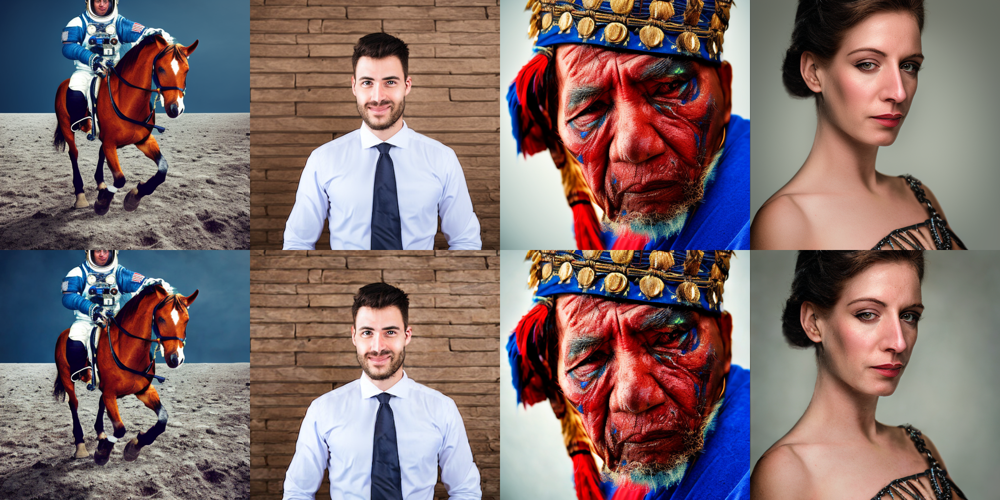
We can do a before/after comparison for one of the images
ref_images[-2]imgs[-2]The images look definitely sharper, but also a bit noisier unfortunately.
Trajectory predict
As we saw in the trajectory analysis, the sampling process seems to follow a relatively smooth curve, but the convergence kind of seems “unfinished”. So one natural idea would be to regress this trajectory with a polynomial, and then evaluate it at a later time in order to see what the results would have been after a few more iterations (which we don’t want to do because we want to maintain the same computational budget).
def update_with_debug_logs(latents, i, t, text_embeddings, do_classifier_free_guidance):
# expand the latents if we are doing classifier free guidance
latent_model_input = torch.cat([latents] * 2) if do_classifier_free_guidance else latents
latent_model_input = pipe.scheduler.scale_model_input(latent_model_input, t)
# predict the noise residual
noise_pred = pipe.unet(latent_model_input, t, encoder_hidden_states=text_embeddings).sample
# perform guidance
if do_classifier_free_guidance:
noise_pred_uncond, noise_pred_text = noise_pred.chunk(2)
noise_pred = noise_pred_uncond + guidance_scale * (noise_pred_text - noise_pred_uncond)
# compute the previous noisy sample x_t -> x_t-1
new_latents = pipe.scheduler.step(noise_pred, t, latents).prev_sample
latent_step = new_latents-latents
# Only change we do here in the update is logging the trajectory
traj_pts_times.append(t.detach().cpu())
traj_pts_values.append(new_latents.detach().cpu())
return new_latentsThis time, we are going to define and use the post-processing function
def compute_converged_latent(i_start=0, deg=5, eval_time=999):
bs = traj_pts_values[0].shape[0]
pts = torch.stack([pt.flatten() for pt in traj_pts_values])
times = torch.Tensor([t for t in traj_pts_times])
times = 999-times # We reverse time as previously
coefficients, residuals, rank, singular_values, rcond = np.polyfit(times.float().detach().cpu().numpy()[i_start:],
pts.float().detach().cpu().numpy()[i_start:],
deg=deg, full=True)
y_pred = np.polyval(coefficients, eval_time)
converged_latents = torch.from_numpy(y_pred).view(bs, 4, 64, 64).half().to(device)
return converged_latentstraj_pts_times, traj_pts_values = [], []
torch.manual_seed(seed)
imgs = my_sd_sampling(custom_update=update_with_debug_logs, post_processing=compute_converged_latent,
i_start=0, deg=6, eval_time=1024)100%|██████████| 50/50 [00:55<00:00, 1.12s/it]image_grid(ref_images[:len(prompts)] + imgs[:len(prompts)]
+ ref_images[len(prompts):] + imgs[len(prompts):], rows=2*num_images_per_prompt, cols=len(prompts))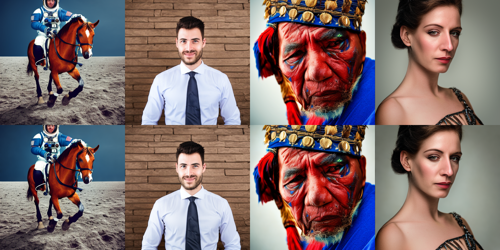
ref_images[1]imgs[1]Interestingly, this seems to have mostly an effect on the lighting. Let’s try to play a bit with the parameters
traj_pts_times, traj_pts_values = [], []
torch.manual_seed(seed)
imgs = my_sd_sampling(custom_update=update_with_debug_logs, post_processing=compute_converged_latent,
i_start=0, deg=6, eval_time=1100)100%|██████████| 50/50 [00:55<00:00, 1.12s/it]image_grid(ref_images[:len(prompts)] + imgs[:len(prompts)]
+ ref_images[len(prompts):] + imgs[len(prompts):], rows=2*num_images_per_prompt, cols=len(prompts))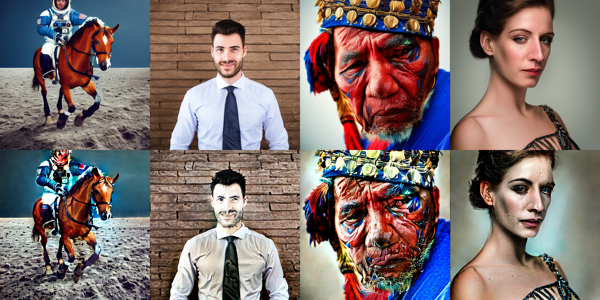
traj_pts_times, traj_pts_values = [], []
torch.manual_seed(seed)
imgs = my_sd_sampling(custom_update=update_with_debug_logs, post_processing=compute_converged_latent,
i_start=0, deg=5, eval_time=1050)100%|██████████| 50/50 [00:55<00:00, 1.12s/it]image_grid(ref_images[:len(prompts)] + imgs[:len(prompts)]
+ ref_images[len(prompts):] + imgs[len(prompts):], rows=2*num_images_per_prompt, cols=len(prompts))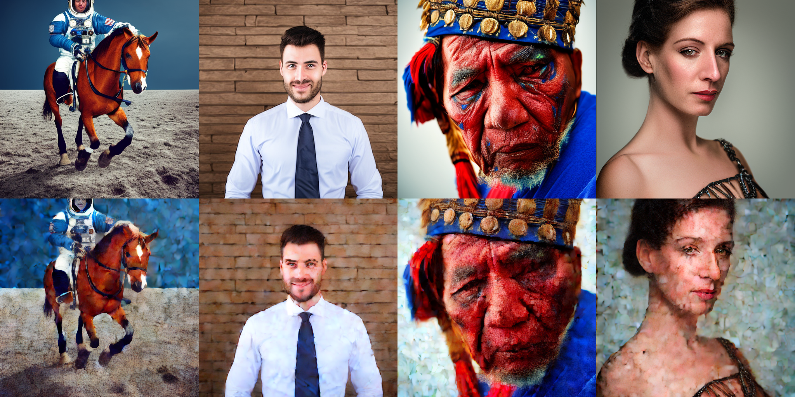
traj_pts_times, traj_pts_values = [], []
torch.manual_seed(seed)
imgs = my_sd_sampling(custom_update=update_with_debug_logs, post_processing=compute_converged_latent,
i_start=0, deg=4, eval_time=1050)100%|██████████| 50/50 [00:55<00:00, 1.12s/it]image_grid(ref_images[:len(prompts)] + imgs[:len(prompts)]
+ ref_images[len(prompts):] + imgs[len(prompts):], rows=2*num_images_per_prompt, cols=len(prompts))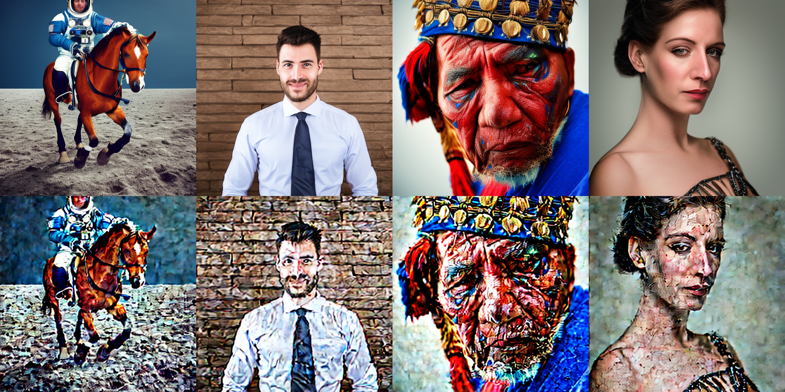
Ok, not exactly what we were expecting… This means that this polynomial fit technique is probably not very robust. But maybe it can be used as a new cool form of AI-generated art?
Everything combined
def update_with_all_improv(latents, i, t, text_embeddings, do_classifier_free_guidance):
# expand the latents if we are doing classifier free guidance
latent_model_input = torch.cat([latents] * 2) if do_classifier_free_guidance else latents
latent_model_input = pipe.scheduler.scale_model_input(latent_model_input, t)
# predict the noise residual
noise_pred = pipe.unet(latent_model_input, t, encoder_hidden_states=text_embeddings).sample
# perform guidance
if do_classifier_free_guidance:
noise_pred_uncond, noise_pred_text = noise_pred.chunk(2)
dir_change = noise_pred_text/noise_pred_text.norm() - noise_pred_uncond/noise_pred_uncond.norm()
noise_pred = noise_pred_uncond + guidance_scale * dir_change * noise_pred_uncond.norm()
noise_pred = noise_pred/noise_pred.norm()*noise_pred_uncond.norm()
# compute the previous noisy sample x_t -> x_t-1
new_latents = pipe.scheduler.step(noise_pred, t, latents).prev_sample
if i>=round(0.8*num_inference_steps) and i!=num_inference_steps-1:
new_latents = latents + 0.9 * (new_latents-latents)
latent_step = new_latents-latents
traj_pts_times.append(t.detach().cpu())
traj_pts_values.append(new_latents.detach().cpu())
return new_latentstraj_pts_times, traj_pts_values = [], []
torch.manual_seed(seed)
imgs = my_sd_sampling(custom_update=update_with_all_improv, post_processing=compute_converged_latent,
i_start=0, deg=6, eval_time=1024)100%|██████████| 50/50 [00:55<00:00, 1.12s/it]image_grid(ref_images[:len(prompts)] + imgs[:len(prompts)]
+ ref_images[len(prompts):] + imgs[len(prompts):], rows=2*num_images_per_prompt, cols=len(prompts))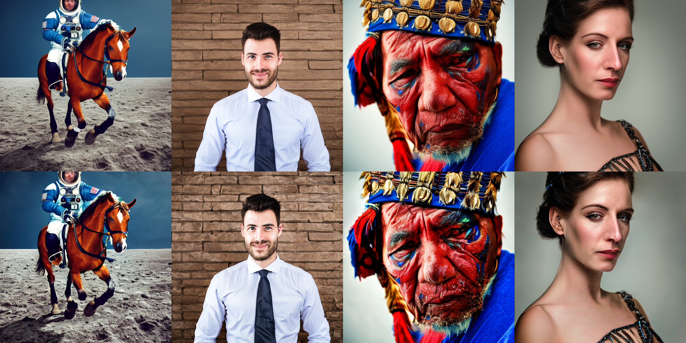
ref_images[0]imgs[0]ref_images[1]imgs[1]ref_images[2]
imgs[2]
ref_images[3]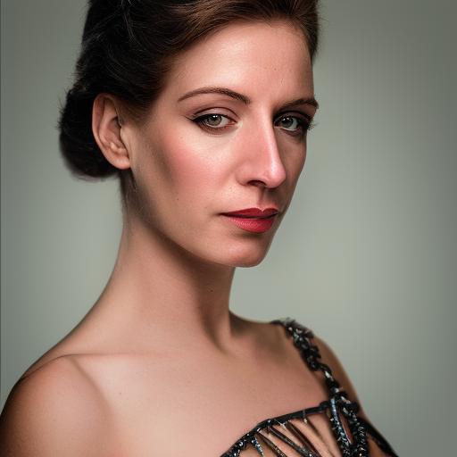
imgs[3]Conclusion
In this notebook, we made 3 modifications: - rescale during the guidance weighted average - preventing the overshoot at the end - smoothing the sampling trajectory using polynomial fit
Each of those modifications gave slightly different results taken independently. When combined together, they make the images MUCH sharper, which can be a good or bad thing, depending on the effect one wants to get at the end.
At the end of the day, I think the main takeaway is that understanding and controling the sampling process of diffusion models can have a very important impact, and understanding it can be crucial.